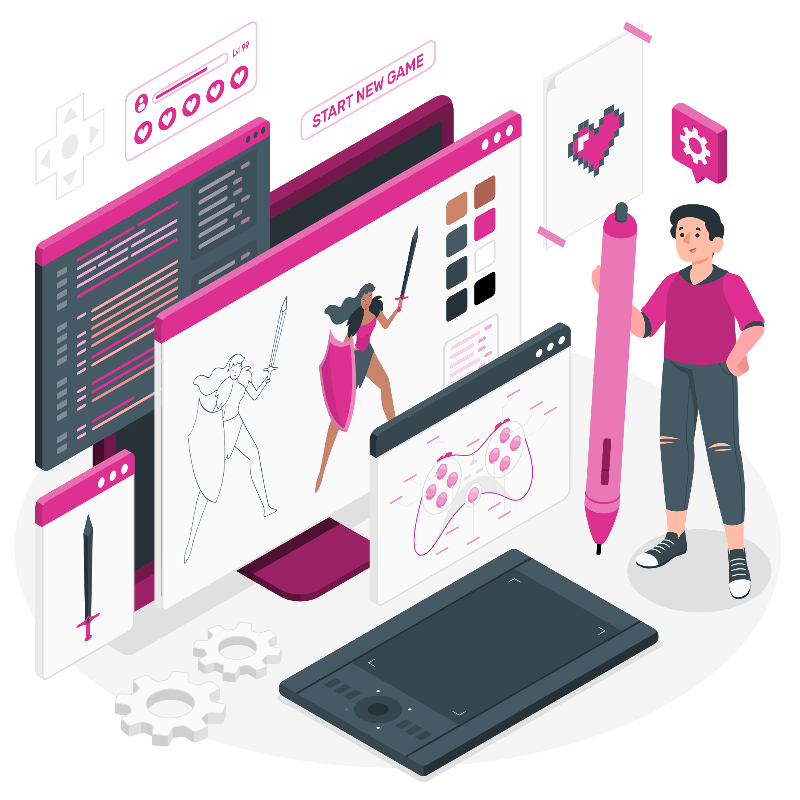
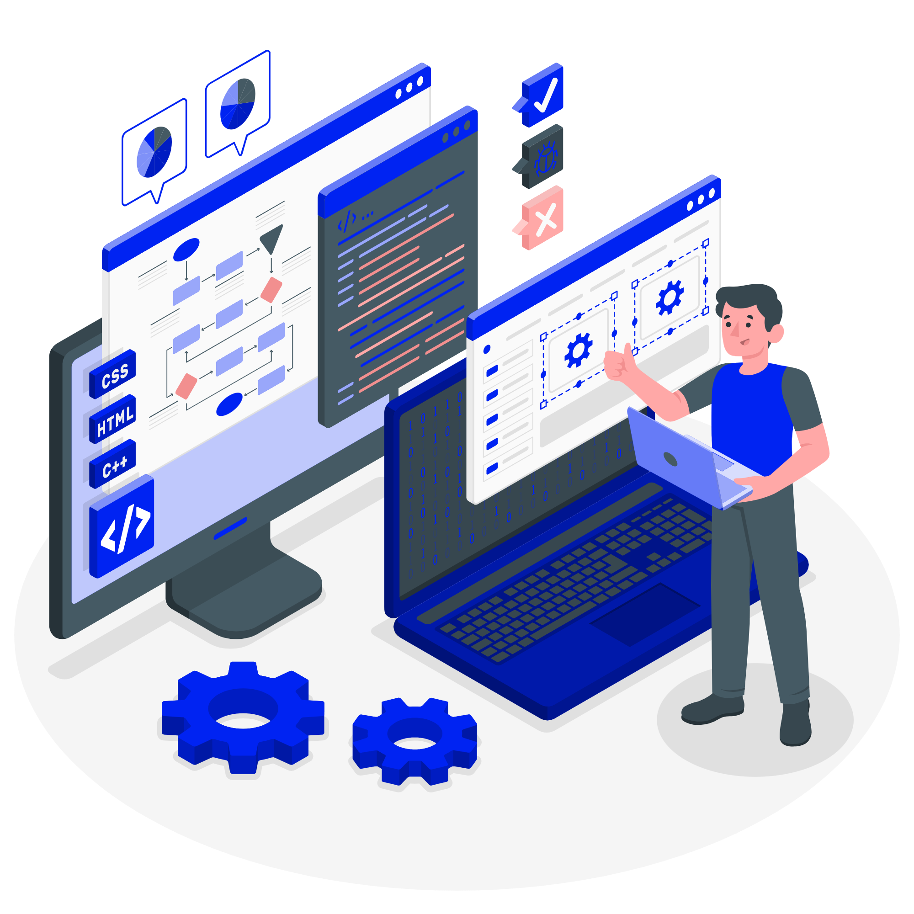
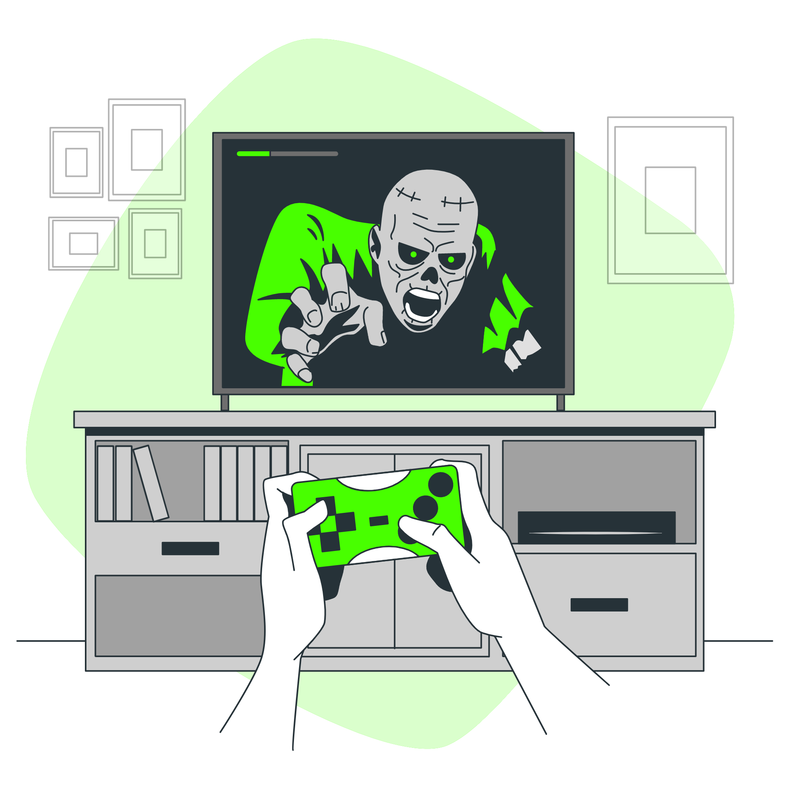
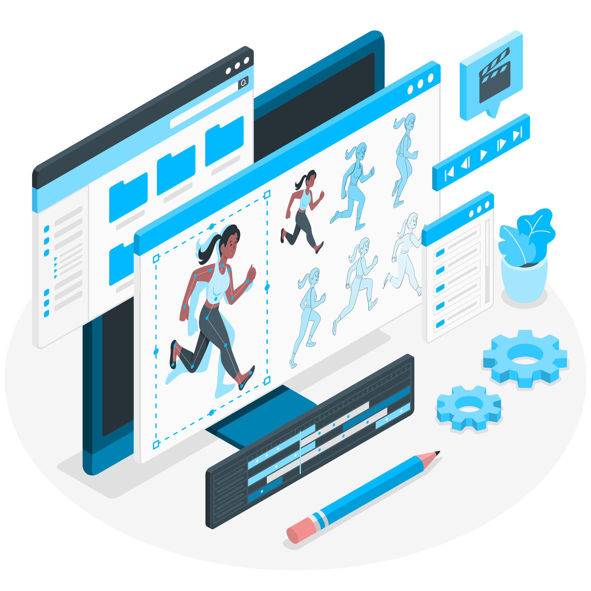
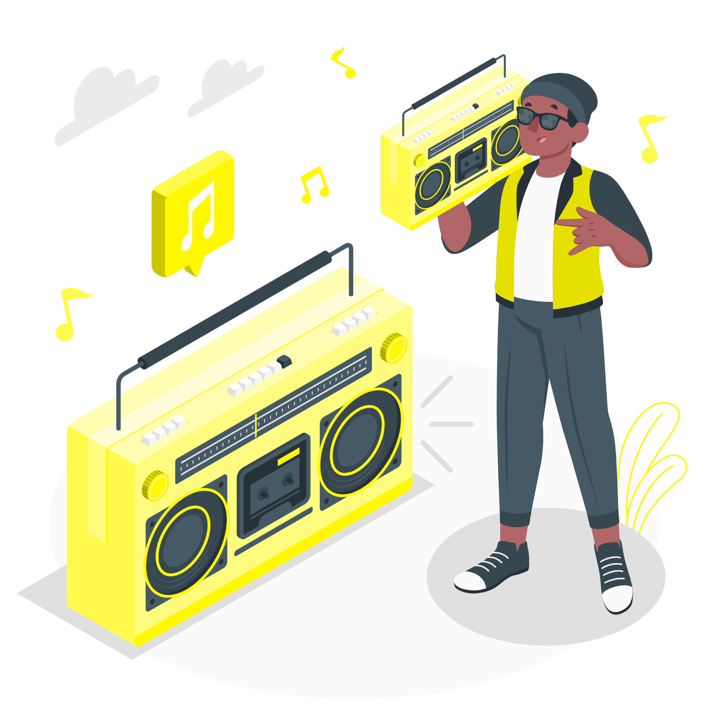

Designer de jogos |
Programador |
Tester |
Animador |
Sound Designer |
Roteirista |
|
O design de jogos envolve desde a concepção, criação até a coordenação do jogo que será
criado. É por meio dessa atividade que o projeto toma vida e passa a englobar as áreas de programação, arte, sonoplastia, entre outros.
Sendo assim, a responsabilidade do game designer (ou designer de jogos) é cuidar de todo o
planejamento da interface, interatividade, enredo e mecânicas do jogo que deverão entreter
o jogador. Em outras palavras: é esse profissional que deverá pensar em formas de tornar o jogo divertido, engajador e interessante para o público. |

|
|
Programadores de games (ou desenvolvedores de games) são pessoas que trabalham com a
escrita de código e sistemas voltados para a área da criação de jogos. A área de atuação de
um programador ou programadora de jogos eletrônicos varia a partir da plataforma, sendo elas
PCs, consoles, navegadores web e plataformas mobile.
A principal tarefa de uma pessoa que trabalha como programadora de jogos é transformar as ideias, os projetos, desenhos e condições do Game Designer em uma aplicação executável e jogável, atribuindo os elementos visuais e sonoros por meio de códigos. |

|
|
O Game Tester precisa de encontrar as falhas e bugs existentes nos videogames antes do
seu lançamento no mercado. Assim, é uma espécie de técnico de qualidade que também assegura a
reputação das produtoras de jogos. Além disso, contribui para o sucesso das vendas.
A função de Testador de Jogos pode ser feita por um Gamer profissional, mas também começa a haver, cada vez mais, pessoas especializadas nesse serviço. Mas é seguro que para fazer esse trabalho, é preciso adorar videogames! O Game Tester entra em cena quando os protótipos dos jogos estão concluídos. |

|
| Na indústria de desenvolvimento de jogos, o trabalho do Animador é dar movimento e criar expressões para elementos orgânicos (personagens, animais, criaturas, natureza) e, em alguns projetos, inorgânicos (como objetos interativos, cenários e equipamentos de personagens); O desafio de um Animador é conseguir representar movimento e comportamento de personagens / objetos de forma natural e o mais próximo da vida real; O trabalho precisa ser feito de forma que utilize todo o potencial dos softwares utilizados de forma eficiente e capaz de utilizar todos os recursos da engine utilizada no jogo. |

|
|
O design de som é o processo de gravação, compra, manipulação ou geração de elementos
de áudio. Ele mais comumente envolve a manipulação de áudio previamente composto ou gravado
mas, em alguns casos, também pode significar a criação de um som que ainda não existe.
Como apontam os profissionais, o dia a dia do Sound Designer é bem dinâmico. Ele precisa trabalhar em colaboração com o diretor e até roteiristas, reunindo o máximo de informações possível sobre qualquer som ou música necessário. |

|
|
O roteirista de games é o profissional encarregado de criar
narrativas para jogos digitais.
O roteirista cria todo o conceito por trás do jogo e define como será a sua dinâmica.
Assim como em uma história, é preciso elaborar o perfil de cada um dos personagens, detalhando quem são os principais e quem se apresenta como antagonista.
Também passa pela decisão do roteirista de games como sao as conversas entre os personagens e qual é a aparência dos cenários pelos quais eles passam. |
|